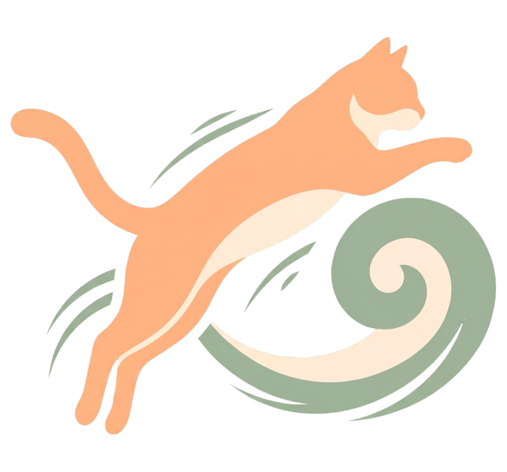

Diario di casa
IL MIO GATTO
Si chiama Biscotto, ha il pelo color albicocca e la convinzione profonda che la casa sia sua. Noi ci abitiamo per gentile concessione.


Dorme quindici ore, poi vola
Passa la mattina al sole sul davanzale, immobile come un soprammobile. Poi, senza preavviso, attraversa il salotto in tre balzi e atterra sulla libreria.
Ha le sue regole: la ciotola deve essere piena a metà, il divano è suo dalle 15 alle 18 e le scatole di cartone vanno sempre controllate.
La sua scheda
- Età
- 4 anni
- Peso
- 4,8 kg
- Sonno
- 15 ore/giorno
- Pasti
- 2 + spuntini
Un gatto non si possiede: ti sceglie, e da quel giorno la casa ha un cuore in più.